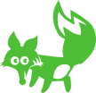

Kårnummer

Scoutnet

Information
Fin siffra
Grundad
Gammalt
Status
Aktiv
Scoutlokalens address
Adress
Samverks-
organisation
Samverksorganisation
Scouterna
Nätverk
Större scouterna
Org. nr
Rolig siffra
Avdelningar
Kottarna
Ålder: 6 - 7 år
Medlemmar: 10 st
Träden

Ålder: 8 - 10 år
Medlemmar: 26 st
Svamparna
Ålder: 8 - 10 år
Medlemmar: 18 st
Djungeldjuren
Ålder: 11 - 13 år
Medlemmar: 22 st
Vildfåglarna
Ålder: 11 - 13 år
Medlemmar: 24 st
Skogslöparna
Ålder: 14 - 16 år
Medlemmar: 41 st
Utmanarna
Ålder: 16 - 20 år
Medlemmar: 14 st